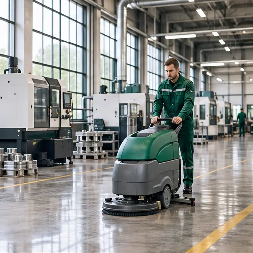
Промышленные предприятия
Клининг производственных помещений. Также убираем паркинги, подвалы и автосервисы, проводим роторную чистку полов.
Коммерческий и промышленный клининг
Промышленные предприятия, медицинские клиники, офисы. Жилые и нежилые помещения. Работаем 24/7.
01 / Уборка после ремонта
Удалим строительную пыль и следы ремонта. Подготовим объект к открытию или заселению.
02 / Вывоз мусора · Москва и МО
Соберём, вынесем и вывезем мусор. Согласуем объём, сроки и стоимость вывоза.
03 / Профессиональная мойка полов
Очистим полы с учётом материала покрытия. Для офисов, торговых и промышленных объектов.
04 / Мойка окон и перегородок
Вымоем окна и стеклянные перегородки. Очистим витрины, рамы и подоконники.
05 / Уборка поверхностей
Очистим мебель и рабочие поверхности. Протрём ручки, выключатели и другие зоны контакта.
06 / Генеральная уборка · Москва и МО
Генеральная уборка офисов, складов, ТЦ и домов. Оставьте заявку, рассчитаем стоимость.
Какие объекты убираем
Убираем промышленные предприятия, медицинские клиники, офисы и другие коммерческие помещения в Москве и Московской области. Работаем разово и на регулярной основе.

Клининг производственных помещений. Также убираем паркинги, подвалы и автосервисы, проводим роторную чистку полов.
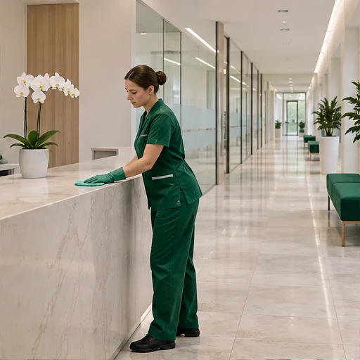
Клининг медицинских помещений. Состав работ и график согласуем под задачи учреждения. Пример генеральной уборки поликлиники есть в наших кейсах.
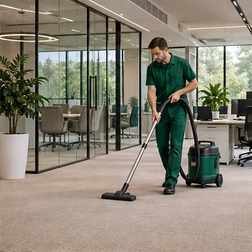
Ежедневная и генеральная уборка, подготовка помещений после ремонта. График подбираем под работу офиса.
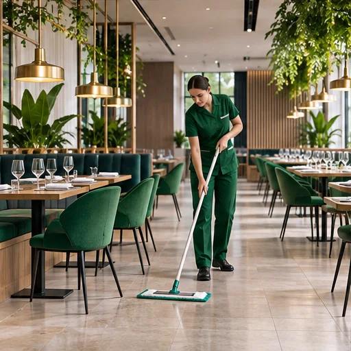
Уборка торговых площадей, кафе и ресторанов. Мойка окон, химчистка и срочная экспресс-уборка.
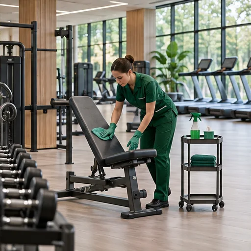
Клининг спа-центров, салонов и фитнес-центров. Разовая уборка и обслуживание по согласованному графику.
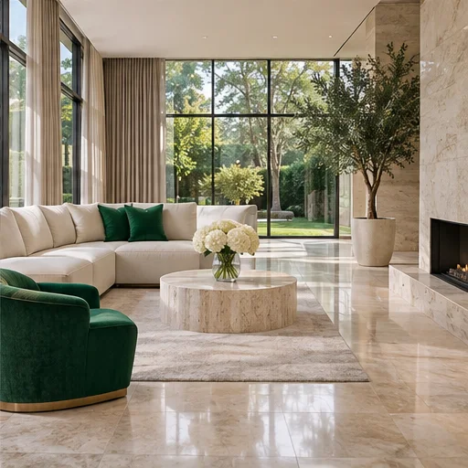
Уборка жилых помещений, коттеджей, таунхаусов и пентхаусов. Генеральная, поддерживающая и после строительства.
01 / Наши работы
Уборка офисов, складов, торговых центров, поликлиник, ресторанов и коттеджей. В каждом кейсе есть фотографии и описание выполненных работ.
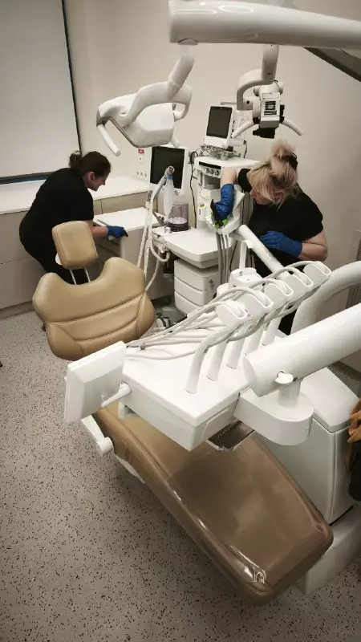
01 / Медицинское учреждение
Очистили и обработали поверхности в помещениях поликлиники, включая процедурный кабинет.
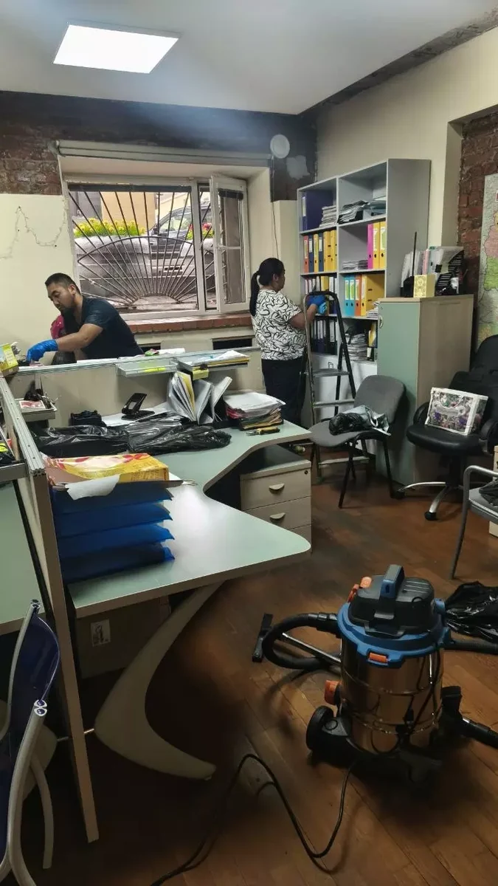
02 / Офис
Очистили рабочие места, жалюзи и стеллажи с документами. Вымыли полы и плинтусы.
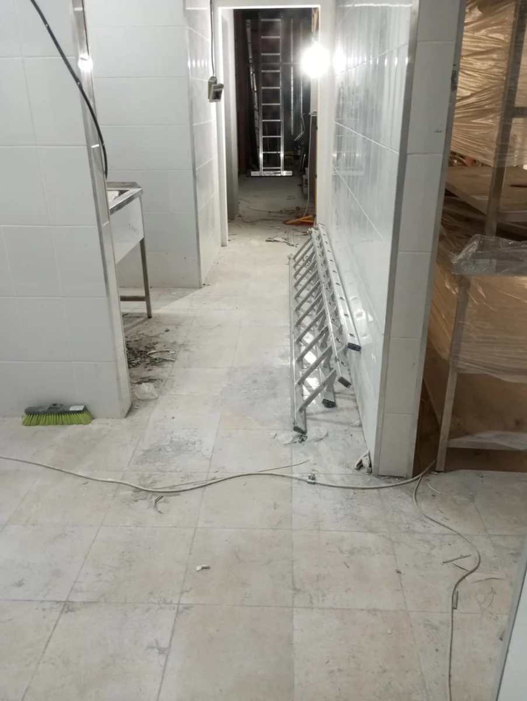
03 / Склад
После ремонта на объекте остались строительная пыль, мусор и следы клея. В кейсе описан порядок очистки помещения.
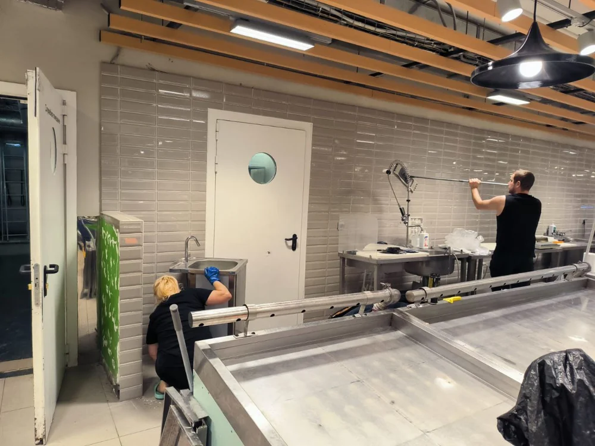
04 / Торговый центр
На объекте требовалось убрать остатки стройматериалов, отмыть плитку и очистить стеклянные перегородки.
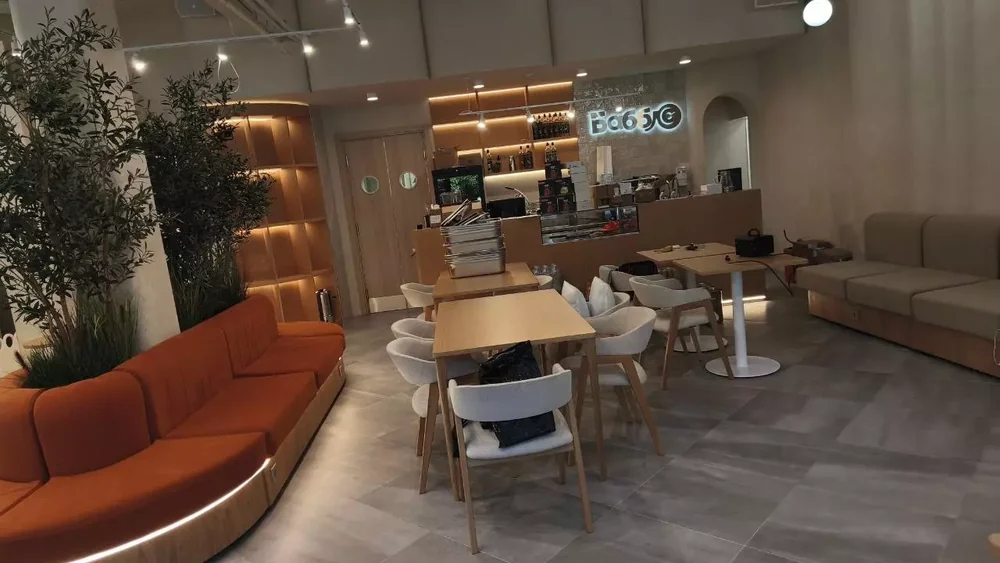
05 / Ресторан
Подготовили ресторан к открытию. Убрали строительную пыль и очистили поверхности в зале.
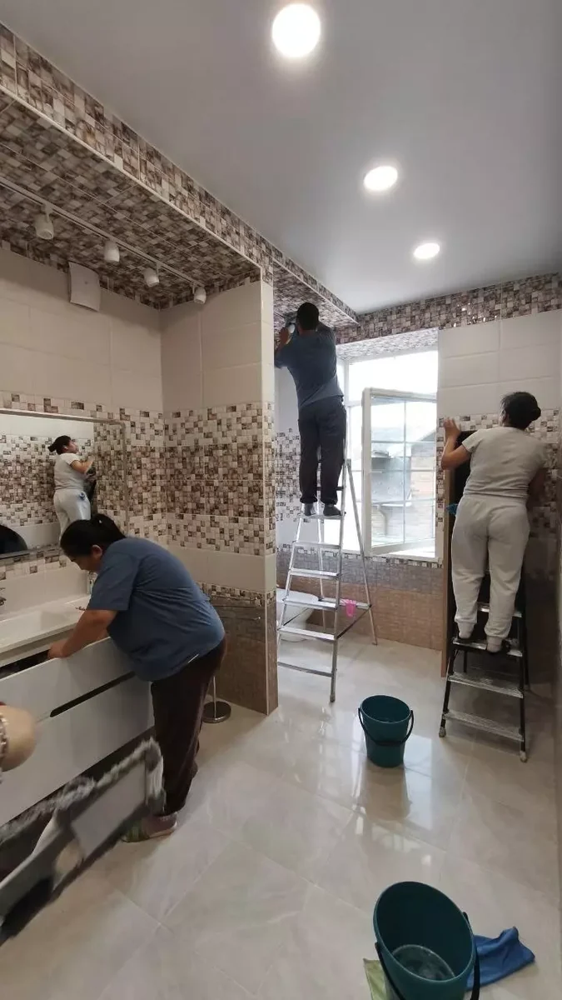
06 / Частный дом
Очистили поверхности и труднодоступные зоны загородного дома, отмыли плитку и сантехнику.
Почему мы
В работе используем профессиональную технику, инвентарь и сертифицированные средства.
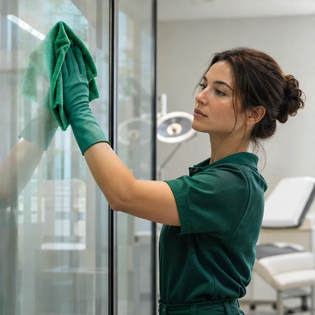
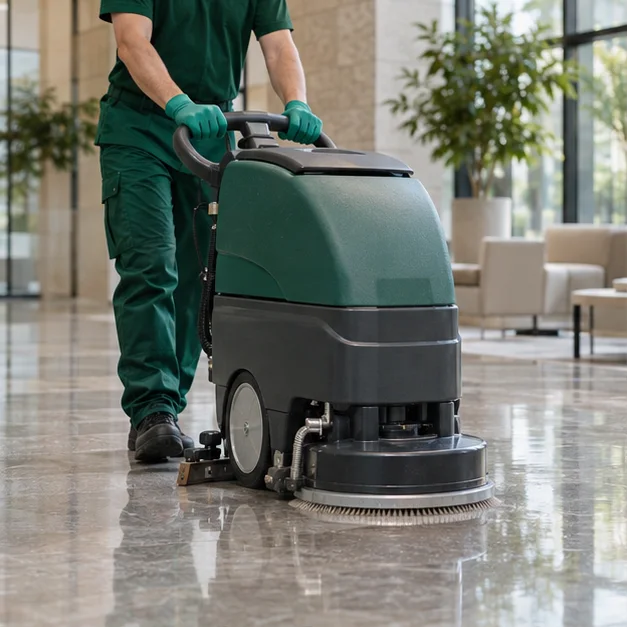
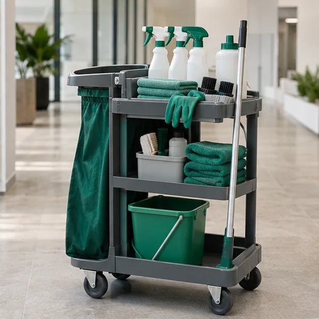
За каждым объектом закрепляется наш менеджер, который ведёт все этапы работы;
Заключаем договор и указываем о том, что мы несём ответственность за сроки и ваше имущество;
Работу выполняют квалифицированные сотрудники, которые знают всю технику работ с инвентарём и химией;
Работаем 24/7, даже в ночное время;
Выполняем работу в удобное для заказчика время и соблюдаем сроки;
Убираем все труднодоступные места и загрязнения любой сложности.
02 / Простой процесс
Для расчёта нужны площадь объекта и характер работ. Обсудим график, подготовим предложение и согласуем уборку.
Укажите тип помещения, площадь и задачу: регулярная уборка, генеральная или после ремонта.
Бригада выполнит согласованные работы с использованием профессиональной техники и сертифицированными моющими средствами
Выполним свою работу в согласованные сроки и сверим с перечнем договорённостей
03 / Прозрачные ориентиры
Стоимость уборки рассчитываем по площади и характеру работ. Ниже указаны стартовые тарифы с основного сайта; для вашего объекта подготовим индивидуальное предложение.
04 / Обратная связь
Отзывы клиентов с основного сайта КлинингСервис-24. Клиенты рассказывают о сроках, качестве уборки и работе бригады.
“Убрали быстро, качественно, цены приемлемые. Очень советую!
“Хочу поблагодарить весь персонал за прекрасную работу и профессиональный подход к делу!
“Уборку провели быстро и по адекватной за работу цене. Обязательно обращусь ещё!
05 / О компании
КлинингСервис-24 оказывает услуги коммерческого и промышленного клининга в Москве и Московской области. Убираем предприятия, медицинские клиники, офисы, торговые и бизнес-центры. Также работаем с частными клиентами. Принимаем заказы круглосуточно, без выходных.
Проводим генеральную и капитальную уборку, убираем после строительства, пожаров, затоплений и мероприятий. Доступны ежедневный клининг, уборка перед арендой и после неё, химчистка и дезинфекция помещений. Для коммерческих объектов предлагаем контрактное обслуживание.
06 / Полезная информация
Материалы об уборке коммерческих, медицинских и промышленных помещений. Подробности по каждому направлению на основном сайте.
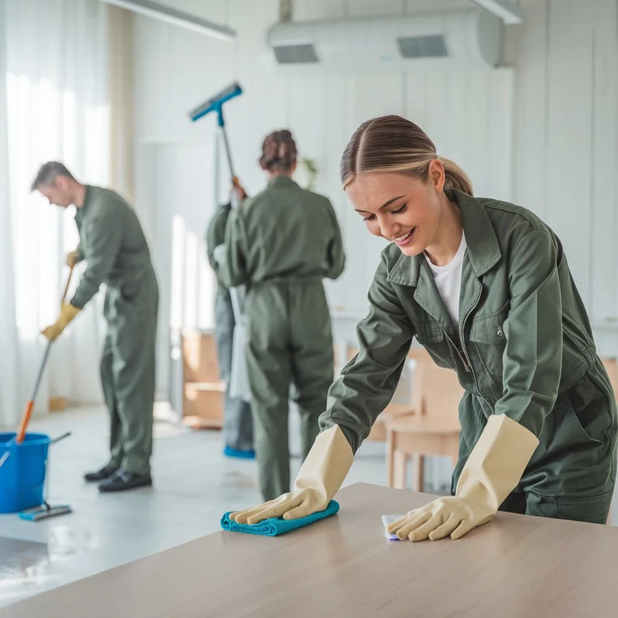
01 / БизнесЧто важно учесть при уборке офиса, магазина или бизнес-центра.
Читать статью ↗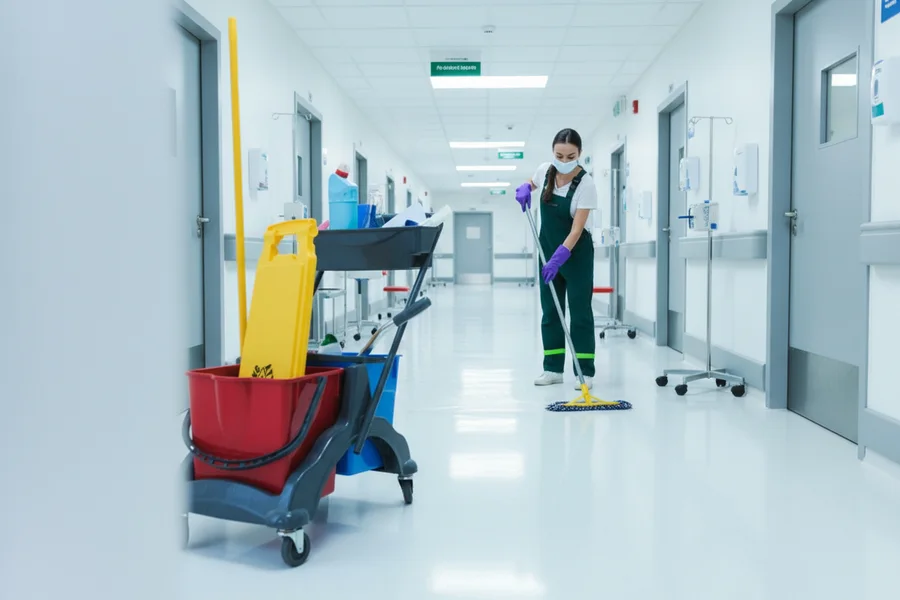
02 / МедицинаОсобенности уборки кабинетов, приёмных и общих помещений.
Читать статью ↗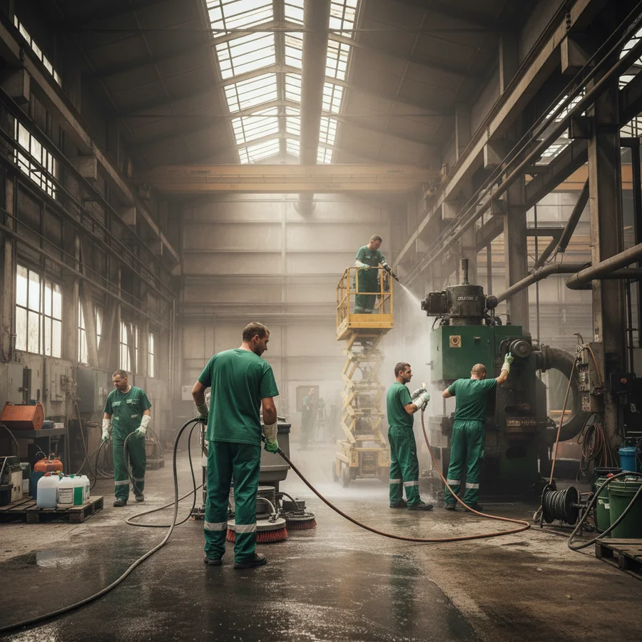
03 / ПроизводствоКак организуется уборка производственных помещений и площадок.
Читать статью ↗Услуги в Москве и МО
Проводим клининг промышленных предприятий и медицинских клиник в Москве и Московской области. Для каждого объекта согласуем перечень работ и график обслуживания. Пример уборки поликлиники можно посмотреть в разделе «Наши работы».
Для офисов, магазинов, торговых и бизнес-центров, ресторанов и фитнес-центров предлагаем регулярную и генеральную уборку. Если помещение нужно подготовить после ремонта или строительства, согласуем отдельный перечень работ. Для срочных задач доступна экспресс-уборка.
Моем окна и фасады любых видов и размеров, выполняем альпинистские работы. В перечень услуг входят роторная чистка полов, химчистка, дезинфекция помещений и озонирование коммерческих объектов. Эти работы можно обсудить при расчёте стоимости уборки.
Принимаем заказы на уборку после пожара, затопления, мероприятий и дезинсекции. Убираем помещения перед сдачей в аренду и после выезда арендаторов. Характер загрязнений и площадь учитываем при составлении предложения.
Единой цены для всех объектов нет: расчёт зависит от площади и характера работ. Сообщите, какое помещение требуется убрать, и опишите задачу. Мы подготовим коммерческое предложение; стартовые тарифы можно посмотреть в разделе «Услуги и цены».
07 / Частые вопросы
Если остались вопросы по уборке вашего объекта, позвоните или оставьте заявку.
Задать вопрос ↗Цена зависит от площади помещения и характера работ. Сообщите тип объекта, площадь и нужные услуги, чтобы мы подготовили индивидуальное коммерческое предложение.
Да, работаем с промышленными предприятиями, медицинскими клиниками и другими коммерческими объектами. Состав работ и график согласуем индивидуально.
Да. Для офисов и коммерческих помещений доступны регулярная и генеральная уборка, индивидуальный график и контрактное обслуживание. Можно заказать однократный клининг.
Генеральную, капитальную и поддерживающую уборку, уборку после строительства, мероприятий, пожара и затопления. Также убираем перед арендой и после неё, после дезинсекции, выполняем экспресс-уборку.
Да, обслуживаем Москву и Московскую область. Работаем круглосуточно, без выходных; время и график уборки согласуем при заказе.
Применяем сертифицированные средства и профессиональную технику. Производим собственные чистящие и моющие средства, также сотрудничаем с компанией Vikont.
Предусмотрены скидки постоянным клиентам. Стоимость и условия обслуживания обсуждаем индивидуально с учётом площади и характера работ.
08 / Начнём с вашей задачи
Нужна уборка предприятия, клиники или другого коммерческого объекта? Укажите площадь и характер работ. Подготовим коммерческое предложение для разовой уборки или регулярного обслуживания.
+7 (495) 015-10-55 ↗Москва и Московская область · 24/7